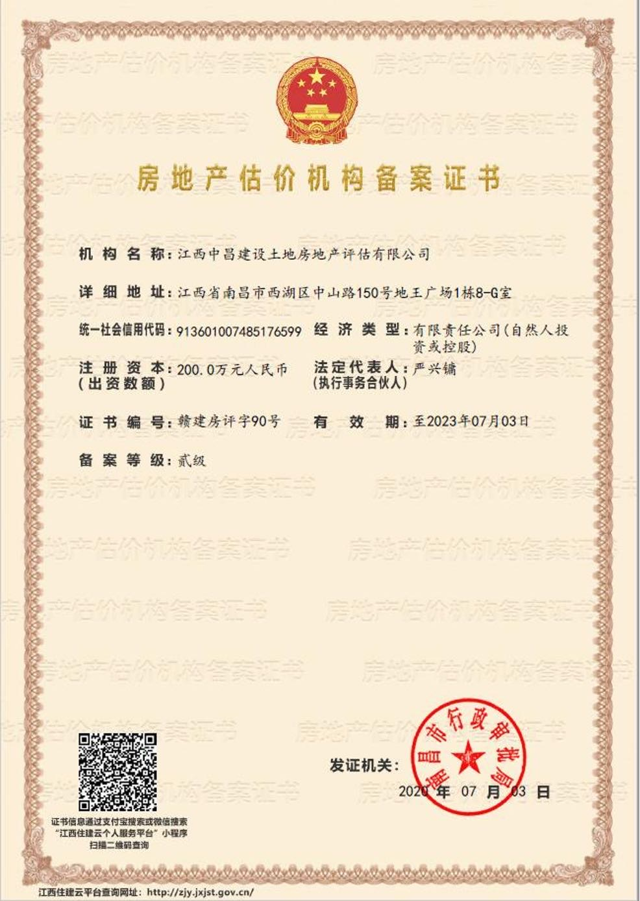

● 房地产价格评估
● 土地估价
● 房地产咨询、营销策划
● 房地产项目及信贷可行性研究
● 征收土地税费涉及的土地估价
● 土地及房地产各种业务代理等
● 工程造价咨询、代编工程概预算
● 承担各种代理综合服务
江西中昌建设土地房地产评估有限公司
于2003年成立
房地产估价机构备案证书（贰级）
土地评估机构资信等级证书（A级）

●东湖区老动物园周边地块（青山南路二七北路南）旧城改造项目（征收面积约2.3万平方米）
●青云谱区航空路地块—南莲路周边旧城改造（城镇房）项目房屋征收评估（征收面积约0.6万平方米）
●青云谱区楞上村农房征收评估（征收面积约7.3万平方米）
●青云谱区墅溪路地块-上海南路沿线旧城改造（城镇房）项目房屋征收评估（征收面积约1.1万平方米）
●青云谱周边（洪都大道周边旧城改造二期）项目国有土地上房屋征收评估（征收面积约1万平方米）
●红谷滩中心片区控制性规划D4、D6地块城市棚户区改造房屋征收装修评估（征收面积约1.6万平方米）
●青云谱周边（徐坊客运站以南地块）房屋征收项目房屋征收评估（征收面积约3.9万平方米）
●红谷滩中心区“三九”商品房旧城改造项目国有土地上房屋征收评估（征收面积约1.0万平方米）
●东湖区东湖周边（阳明路以南一期-党家路叠山路地块、戴家巷民德路地块）、东湖周边（洪都北大道两侧-青山南路立交桥下南地块、青山南路立交桥下西地块）国有土地上房屋征收评估（征收面积约1.0万平方米）
●青山湖区临江商务区三期肖坊、张燕、顺外村旧城改造项目农房室内装修评估
●青云谱区京山老街旧城改造改造农房装修评估
●青云谱区楞上城中村改造农房装修评估
●青云谱区象湖隧道（江铃段）旧城改造项目房屋征收评估
●新建县前进村农房装修评估（征收面积约39万平方米）
●青云谱区十字街棚户区旧城改造项目房屋征收评估
●青云谱区九州高架项目房屋征收评估
●中国人民银行南昌中心支行办公楼置换评估
●南昌轨道一号线子固路与八一馆区间站房屋征收评估
●南昌轨道一号线风险维稳评估
●青山湖大道拓宽涉及的房地产征收评估评估
吉安市：
●吉安市解缙路棚户区改造项目房屋征收评估
●吉安高铁站前新区(三期)项目房屋征收评估
●吉安高铁站前新区(四期)项目房屋征收评估
泰和县：
●泰和滨江大道北延太平古庙征收项目
萍乡市：
●萍乡市吉星街棚户区改造房屋征评估（征收面积约3.5万平方米）
●江西铁旅置业有限公司明樾府项目[1-3,5-12号楼（面积96591.25平方米)]新建全装修住宅装修价格评估
●江西旺成房地产开发有限公司开发的江铃城15号楼新建全装修住宅装修评估
●南昌市、南昌县、九江市、吉安市、鹰潭市、贵溪市、余干县、万年县、鄱阳县等自然资源局土地出让评估业务
● 宜丰县城镇土地基准地价更新
● 乐安县城镇土地基准地价更新
● 莲花县工业园区土地集约评价
● 中国银行
● 工商银行
● 农业银行
● 交通银行
● 江西省高级人民法院